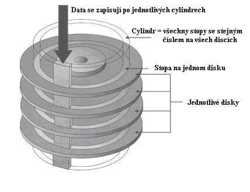

| 
|
Princíp: elektromagnetickı - 0 a 1 sú urèené natoèením mag. domén
Pojmy: - povrch-hlavièka
- Cylinder
- Stopa
- sektor
Rozhrania:- EIDE (IDE)- mo�nos� pripoji� 4 HD (po 2 na ka�dı kábel)
- SCSI - umo�ní pripojenie väèšieho poètu HD, neza�a�uje procesor
- SATA - väèšia rıchlos�, menšie konektory-káble
|